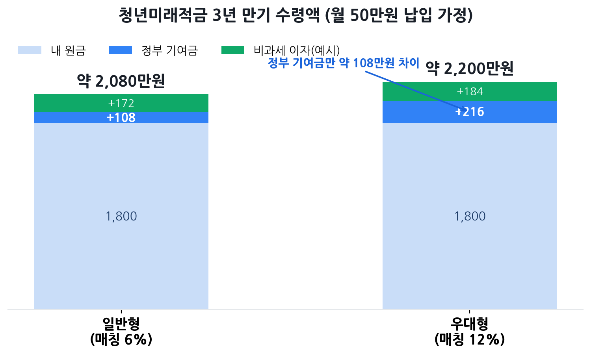
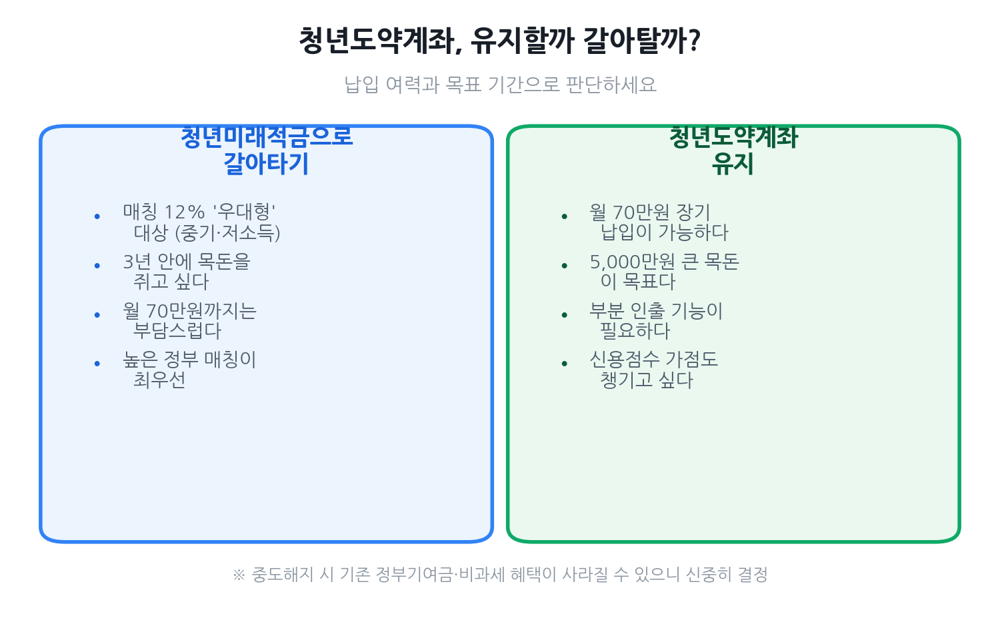

청년미래적금 완벽 가이드 2026
— 사회초년생, 3년에 2,200만 원 만드는 법
청년도약계좌가 2025년으로 끝나고, 2026년 6월 후속 상품 청년미래적금이 새로 나옵니다. 만 19~34세 청년이 3년간 월 최대 50만 원을 넣으면 정부가 6~12%를 얹어줘 최대 2,200만 원을 모을 수 있어요. 특히 월급 200~300만 원대 사회초년생이라면 매칭률이 두 배인 '우대형(12%)' 대상일 가능성이 큽니다.
- 이제 막 취업한 월급 200~300만 원대 사회초년생
- 청년 적금이 처음이라 일반형·우대형 차이가 헷갈리는 분
- 기존 청년도약계좌를 유지할지 갈아탈지 고민 중인 분
- "나도 우대형 12% 대상일까?"가 궁금한 분
청년미래적금이 뭐예요?
청년미래적금은 만 19~34세 청년이 3년 동안 월 최대 50만 원을 저축하면, 정부가 납입액의 6~12%를 기여금으로 매달 얹어주고 이자에는 세금도 면제(비과세 추진)해 주는 정책형 적금입니다. 문재인 정부의 청년희망적금, 윤석열 정부의 청년도약계좌를 잇는 세 번째 청년 자산형성 상품으로, 2026년 예산에 7,446억 원이 편성됐습니다.
핵심은 '짧은 만기 + 높은 매칭률'입니다. 5년이던 청년도약계좌와 달리 만기가 3년으로 짧아 부담이 적고, 정부 기여금·우대금리·비과세를 모두 더하면 일반 적금으로는 불가능한 연 최대 약 16.9% 수준의 효과를 낼 수 있어요. 시중은행 적금 금리가 보통 연 2.5% 안팎인 걸 생각하면 차이가 큽니다.
나는 일반형? 우대형? — 자격 자가진단
청년미래적금은 가입 유형이 일반형과 우대형 두 가지로 나뉘고, 어디에 해당하느냐에 따라 정부가 주는 돈이 두 배까지 차이 납니다. 그래서 "내가 어느 형인지"를 먼저 확인하는 게 가장 중요해요.
| 구분 | 일반형 | 우대형 (혜택 2배) |
|---|---|---|
| 개인소득 | 6,000만 원 이하 | 3,600만 원 이하 |
| 소상공인(연 매출) | 3억 원 이하 | 1억 원 이하 |
| 가구 중위소득 | 200% 이하 | 150% 이하 |
| 정부 매칭률 | 납입액의 6% | 납입액의 12% |
| 월 최대 기여금 | 약 3만 원 | 약 6만 원 |
| 3년 총 기여금 | 약 108만 원 | 약 216만 원 |
공통 요건은 만 19~34세(병역 이행 기간 최대 6년 차감), 월 최대 50만 원 자유적립, 만기 3년입니다.
3년 뒤 얼마 받나 — 만기 수령액 시뮬레이션
월 50만 원을 3년(36개월) 동안 꽉 채워 넣었다고 가정하면, 원금은 1,800만 원입니다. 여기에 정부 기여금과 비과세 이자가 붙어 만기 수령액이 결정됩니다.

| 구성 | 일반형 | 우대형 |
|---|---|---|
| 내 원금(50만×36) | 1,800만 원 | 1,800만 원 |
| 정부 기여금 | 약 108만 원 | 약 216만 원 |
| 비과세 이자 | 약 170만 원대 | 약 180만 원대 |
| 만기 예상 수령액 | 약 2,080만 원 | 약 2,200만 원 |
우대형은 일반형보다 정부 기여금만으로 약 100만 원을 더 받습니다. 같은 돈을 넣고도 결과가 달라지니, 우대형 자격이 된다면 반드시 우대형으로 신청해야 해요.
청년도약계좌, 유지 vs 갈아타기
이미 청년도약계좌를 갖고 있다면 가장 큰 고민이 "유지할까, 갈아탈까"일 거예요. 두 상품은 동시 보유가 안 되고, 청년도약계좌를 중도해지한 뒤 청년미래적금에 신규 가입하는 방식으로만 갈아탈 수 있습니다(2026년 6월 최초 가입 기간 한정).

청년미래적금으로 갈아타면 유리한 경우
- 매칭률 12% 우대형에 해당하는 중소기업 재직·저소득 청년
- 5년은 부담스럽고 3년 안에 목돈을 쥐고 싶은 사람
- 월 70만 원까지 넣을 여력은 없는 사람
청년도약계좌를 유지하는 게 나은 경우
- 월 70만 원까지 꾸준히 장기 납입할 수 있는 사람
- 5,000만 원 규모의 더 큰 목돈이 목표인 사람
- 부분 인출 기능과 신용점수 가점을 활용하고 싶은 사람
신청 방법·일정·필요 서류
청년미래적금은 시중은행 앱을 통해 비대면으로 신청하는 방식이 될 전망입니다(취급 은행은 출시 시 공식 발표). 가입 흐름은 이전 청년도약계좌와 비슷하게 진행될 가능성이 큽니다.
- 가입 신청 — 은행 앱에서 신청(약 2주의 신청 기간 내)
- 자격 심사 — 서민금융진흥원이 나이·개인소득·가구소득 요건 확인
- 계좌 개설 — 심사 통과 후 선택한 은행에서 계좌 개설
- 자유적립 — 매달 최대 50만 원 한도 내에서 납입 시작
소득은 보통 직전 과세기간의 소득 자료로 확인되며, 별도 서류 없이 시스템으로 조회되는 경우가 많습니다. 다만 무직·신규 취업 등으로 소득 증빙이 필요한 경우 원천징수영수증 등을 요청받을 수 있어요.
놓치면 손해 보는 5가지 함정
- ① 둘 다 가입은 불가. 청년도약계좌와 청년미래적금은 중복 보유가 안 됩니다. 갈아타기(해지 후 신규)만 가능해요.
- ② 군필자는 나이 다시 계산. 만 35세여도 군복무 2년을 빼면 만 33세로 인정돼 가입될 수 있습니다. 나이만 보고 포기하지 마세요.
- ③ 가구소득 기준을 빼먹기 쉬움. 본인 소득이 낮아도 가구 중위소득 기준(일반형 200%·우대형 150%)을 넘으면 탈락하거나 등급이 내려갈 수 있습니다.
- ④ 우대형인데 일반형으로 신청. 소득 3,600만 원 이하라면 우대형(12%) 대상입니다. 모르고 일반형으로 가입하면 3년간 약 100만 원을 손해 봐요.
- ⑤ 신청 2주를 놓침. 상시 가입이 아니라 정해진 기간에만 받습니다. 출시 일정 알림을 미리 설정해 두세요.
자주 묻는 질문
Q. 청년도약계좌를 갖고 있는데 갈아탈 수 있나요?
네. 청년도약계좌를 중도해지한 뒤 청년미래적금에 신규 가입하는 방식으로 갈아타기가 허용될 예정입니다. 단 2026년 6월 최초 가입 기간에 한해 적용되며, 동시 보유는 안 됩니다.
Q. 군대를 다녀와 만 35세인데 가입할 수 있나요?
가능할 수 있습니다. 나이 계산 시 병역 이행 기간을 최대 6년까지 빼주기 때문에, 차감 후 만 34세 이하가 되면 대상입니다.
Q. 프리랜서나 무직도 되나요?
소득·가구소득 요건만 충족하면 직장인이 아니어도 가입할 수 있습니다. 다만 소득이 없으면 가입이 제한될 수 있어, 정확한 기준은 출시 시 공식 안내를 확인해야 합니다.
Q. 월 50만 원을 다 못 채워도 되나요?
네. 자유적립식이라 형편에 맞게 넣으면 됩니다. 단 정부 기여금은 납입액에 비례하므로, 적게 넣으면 받는 기여금도 줄어듭니다.
Q. 중간에 해지하면 어떻게 되나요?
중도해지하면 정부 기여금과 비과세 혜택을 받지 못할 수 있습니다. 가능하면 만기까지 유지하는 것이 유리합니다.
본 글은 정부·언론 공개 자료(금융위원회, 서민금융진흥원, 토스뱅크 등)를 바탕으로 2026년 6월 기준 작성됐습니다. 청년미래적금은 출시 예정 상품으로 세부 기준·일정·취급 은행이 변동될 수 있으니, 신청 전 반드시 공식 채널에서 최종 조건을 확인하세요. 본 페이지는 정보 제공 목적이며 가입·수익을 보장하지 않습니다.